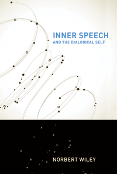

<body bgcolor="#FFFFFF" text="#000000" link="#0000FF" vlink="#CC0000" alink="#CC0000"><center><hr width="350" size="1" align="center" noshade>How the dialogical self discovers the appropriate pathways for guiding us through our lives<hr width="350" size="1" align="center" noshade><p><a href="https://cdcshoppingcart.uchicago.edu/Cart/ChicagoBook.aspx?ISBN=&&PRESS=temple" target="_top">Buy this book!</a> | <a href="https://cdcshoppingcart.uchicago.edu/Cart/Cart.aspx?PRESS=temple" target="_top">View Cart</a> | <a href="https://cdcshoppingcart.uchicago.edu/Cart/Cart.aspx?PRESS=temple" target="_top">Check Out</a></p><p></p></center><!--none//--><h1 class = "booktitle">Inner Speech and the Dialogical Self</h1>
<h3>Norbert Wiley </h3>
paper: $24.95, May 16<BR>EAN:&nbsp;978-1-4399-1328-4<BR><font color=#990033>Available</FONT><font size=-7><br>&nbsp;</font></p><p class="info">cloth: $79.50, May 16<BR>EAN:&nbsp;978-1-4399-1327-7<BR><font color=#990033>Available</FONT><font size=-7><br>&nbsp;</font></p><p class="info">e-book: $24.95, May 16<BR>EAN:&nbsp;978-1-4399-1329-1<BR><font color=#990033>Available</FONT><font size=-7><br>&nbsp;</font></p></p></td></tr></table>
<BR> <p class="info">212 pp<BR> 6 x 9<BR> 3 tables, 3 figs. <p class="info"><font size=-7>&nbsp;</font></p><p class="info">
</P><BLOCKQUOTE><p>"Inner Speech and the Dialogical Self <i>makes a great many original contributions to the research literature. Wiley shows that concepts central to the social sciences-self, social interaction, and the social construction of reality-are based on the notion of inner speech, yet no one has undertaken a systematic exploration of this topic. Wiley is dealing with exceedingly complicated ideas, but his writing is invariably clear, precise, and engaging. He is an enthusiastic guide. This book will be influential. It is a game-changing contribution to our understanding of human nature, and one of those rare books that alter the way we understand important things</i>."<br/>-<b>Michael Flaherty</b>, Professor of Sociology at Eckerd College, and author of <i> The Textures of Time: Agency and Temporal Experience</i><br>
</BLOCKQUOTE>
<p>Inner speech, also known as self-talk, is distinct from ordinary language. It has several functions and structures, from everyday thinking and self-regulation to stream of consciousness and daydreaming. <i>Inner Speech and the Dialogical Self</i> provides a comprehensive analysis of this internal conversation that people have with themselves to think about problems, clarify goals, and guide their way through life. <br/><br/>Norbert Wiley shrewdly emphasizes the semiotic and dialogical features of the inner speech, rather than the biological and neurological issues. He also examines people who lack control of their inner speech-such as some autistics and many emotionally disturbed people who use trial and error rather than self-control-to show the power and effectiveness of inner speech. <br/><br/> <i>Inner Speech and the Dialogical Self </i>takes a humanistic social theorist approach to its topic. Wiley acknowledges the contributions of inner speech theorists, Lev Vygotsky and Mikhail Bakhtin, and addresses the classical pragmatism of Charles Sanders Peirce, John Dewey, William James, and George Herbert Mead to show the range and depth of this largely unexplored field.<br>
<P CLASS="top"><A HREF="#top">BACK TO TOP</A></P>&nbsp;<h2 class="inpageheading"><A NAME="excerpt"></a>Excerpt</h2><p><A HREF="http://www.temple.edu/tempress/chapters_1800/2392_ch1.pdf"> Read the Introduction (pdf).</A></P><br>
<P CLASS="top"><A HREF="#top">BACK TO TOP</A></P>
<BR>&nbsp;
<h2 class="inpageheading"><A NAME="reviews"></a>Reviews</h2>
<p>" <i>A very sound and important work on the processes by which individuals think and undertake actions-what the author calls ‘inner speech.' Wiley addresses all the relevant literature, providing a good synthesis with a focus on the work of Charles Sanders Peirce, George Herbert Mead, and Mikhail Bakhtin. He uses the work of these philosophers to develop a unique theory of inner speech and its relationship to self-conceptions and to the resultant actions.</i>"<br/> <b>-Robert Perinbanayagam</b>, Professor Emeritus, Hunter College of the City University of New York and author of <i>Discursive Acts: Language, Signs, and Selves</i><br>
<p>" <i>(A)n intriguing, exploratory theoretical approach to understanding 'inner speech'.... Wiley tackles some of the big amorphous problems of social theory--self, identity, and agency.... This book is at its best when it provokes the reader to think seriously about this phenomenon and suggests ideas to put to an empirical test.</i>"<br/> <i>-</i><b><i>American Journal of Sociology</i></b><br>
<P CLASS="top"><A HREF="#top">BACK TO TOP</A></P>&nbsp;<P>
<h2 class="inpageheading"><A NAME="contents"></a>Contents</h2><P><span style="font-family: 'Verdana';font-size: 13px;color: #211D1E;" >Acknowledgments<br/><br/>Introduction<br/>1. What Is Inner Speech? Structure and Functions<br/>2. When Does Inner Speech Originate in the Child?<br/>3. Is There a Self?<br/>4. Identity<br/>5. Inner Speech as a Language: Saussure and Chomsky<br/>6. Inner Speech and Agency<br/>7. Pragmatism and the Dialogical Self<br/>8. The Pragmatist Theory of the Self<br/>9. Bakhtin's Voices and Cooley's Looking-Glass Self<br/>10. Inner Speech Theory<br/>Conclusion<br/><br/>References<br/>Index</span></P>
<P CLASS="top"><A HREF="#top">BACK TO TOP</A></P>
</P><BR>&nbsp;
<H2 class="inpageheading"><A NAME="author bio"></a>About the Author(s)</H2><p><b>Norbert Wiley</b> is Emeritus Professor of Sociology at the University of Illinois, Urbana, and the author of <i>The Semiotic Self.</i><br>
<P CLASS="top"><A HREF="#top">BACK TO TOP</A></P>
<p><h2 class="inpageheading"><a name="subjects"></a>Subject Categories</h2> <p><a href="http://www.temple.edu/tempress/sociology.html" target="_top">Sociology</a> <br><a href="http://www.temple.edu/tempress/cultural.html" target="_top">Cultural Studies</a> <br><a href="http://www.temple.edu/tempress/psycho.html" target="_top">Psychology</a> <br><a href="" target="_top"></a> <br><a href="" target="_top"></a> </p>
</p>
<P>
</P>
<p align="center"><a href="https://cdcshoppingcart.uchicago.edu/Cart/ChicagoBook.aspx?ISBN=&&PRESS=temple" target="_top">Buy this book!</a> | <a href="https://cdcshoppingcart.uchicago.edu/Cart/Cart.aspx?PRESS=temple" target="_top">View Cart</a> | <a href="https://cdcshoppingcart.uchicago.edu/Cart/Cart.aspx?PRESS=temple" target="_top">Check Out</a></p><p><font face="Arial" size="1"><a href="copyright.html" onMouseOver="window.status='Web Copyright Policy';return true;" onMouseOut="window.status=''" title="Web Copyright Policy">&copy;</a> 2016 <a href="http://www.temple.edu" target="new" onMouseOver="window.status='Link to Temple University home page';return true;" onMouseOut="window.status=''" title="Link to Temple University home page">Temple University</a>. All Rights Reserved. http://www.temple.edu/tempress/titles/2392_reg.html</font></p>